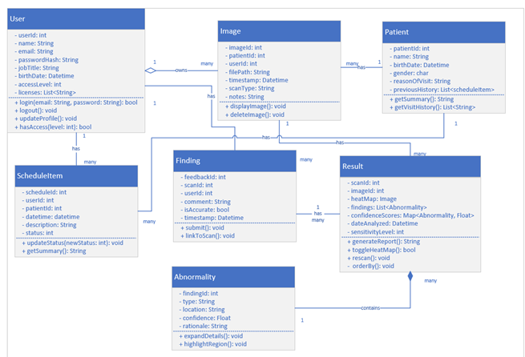

ClearScan —
X-Ray Analysis
A desktop application powered by a ResNet-50 convolutional neural network that detects anomalies in chest X-rays with 93% accuracy. Built end-to-end as a senior year solo project, covering the full ML pipeline from data preprocessing to a polished GUI. Trained on Stanford University's CheXpert dataset.
Demo Video
Key Results
Screenshots & Previews



Technical Highlights
ResNet-50 Fine-Tuning
Leveraged transfer learning on a pre-trained ResNet-50 model, fine-tuned on a labeled chest X-ray dataset. Achieved 93% classification accuracy through iterative hyperparameter tuning.
Full Machine Learning Pipeline
Managed every stage independently: data preprocessing and augmentation, model training, validation, hyperparameter search, and evaluation. No pre-built AutoML solutions.
PySide6 Desktop GUI
Built a clean desktop interface using PySide6 allowing users to upload X-ray images, run inference by diagnosing, view annotated results with confidence scores, and enter items into a schedule. All without needing any knowledge of machine learning algorithms.
Complete SDLC Documentation
Produced professional software engineering artifacts including Use Case Models, Class Specification Models, and Sequence Diagrams, following full software development lifecycle practices.